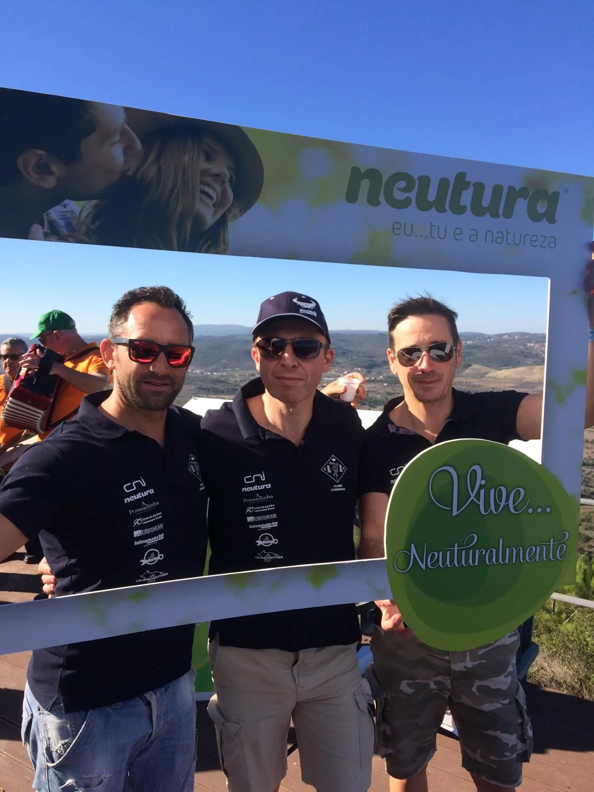
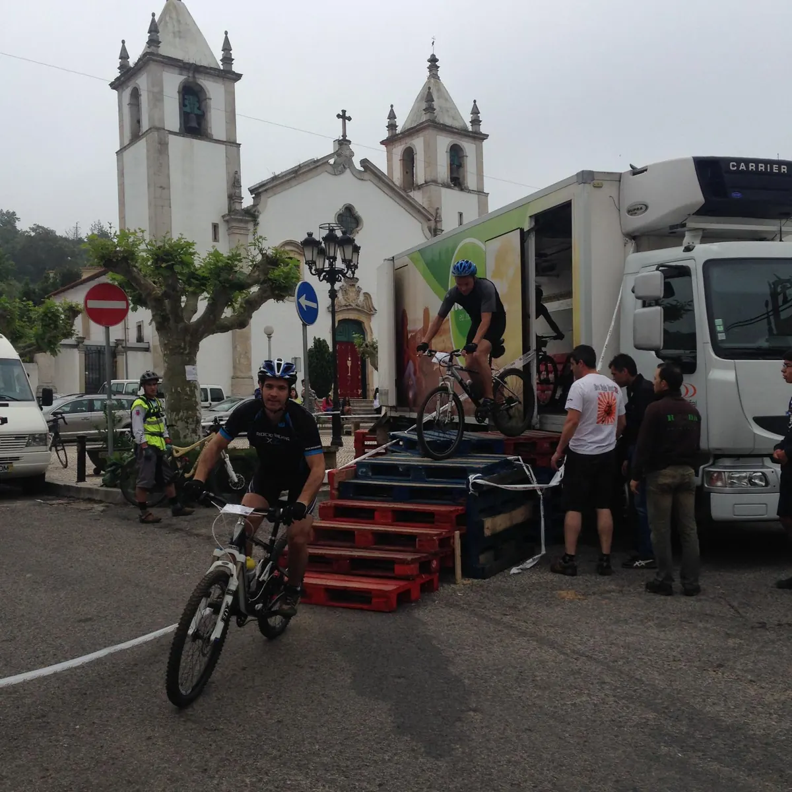
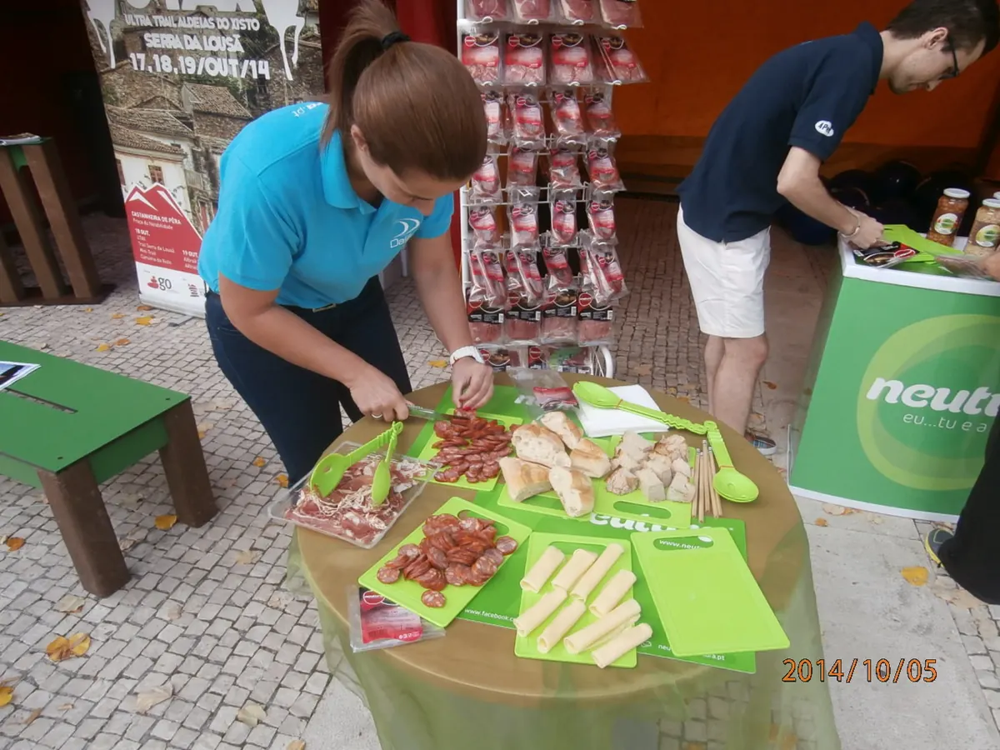
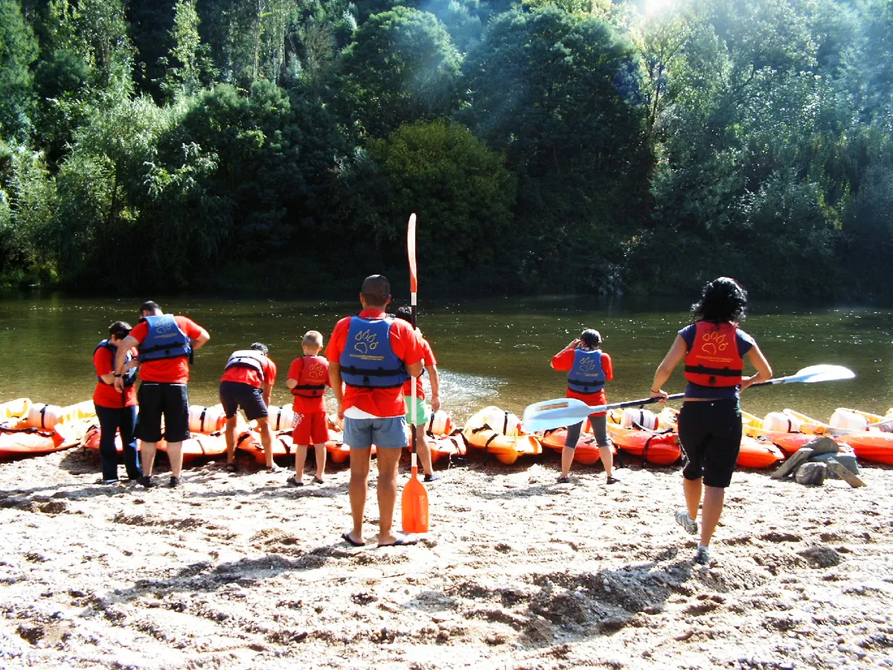
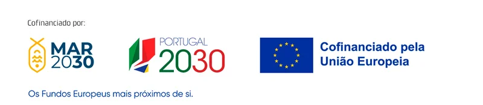
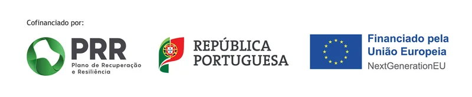
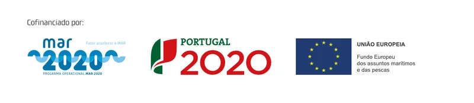
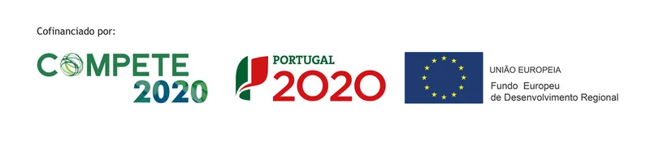
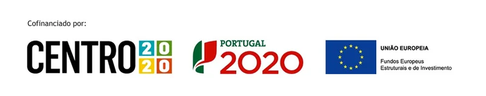

40 Anos de Tradição e Evolução40 Years of Tradition and Evolution
Uma longa caminhada dedicada à excelência na distribuição alimentar e logística. Desde o primeiro dia que a nossa bússola é a satisfação contínua dos nossos clientes, parceiros, fornecedores e colaboradores.A long journey dedicated to excellence in food distribution and logistics. From day one, our compass has been the continuous satisfaction of our customers, partners, suppliers, and employees.
A Nossa HistóriaOur History
-
1986
As OrigensThe Origins
A Sociedade Dalifal, Lda. foi constituída por Escritura Pública a 25 de junho de 1986. Começámos a nossa atividade com a representação exclusiva da IOFIL, distribuindo os saudosos iogurtes que marcaram uma época.Sociedade Dalifal, Lda. was established by Public Deed on 25 June 1986. We began our activity with the exclusive representation of IOFIL, distributing the much-missed yoghurts that marked an era.
-
2000
A Grande ExpansãoThe Great Expansion
Uma nova visão estratégica ditou o crescimento do nosso portefólio. Fomos além dos laticínios e passámos a distribuir bebidas, salsicharia, pastelaria, entre outros. Estabelecemos parcerias fundamentais com marcas líderes para impulsionar o desenvolvimento.A new strategic vision drove the growth of our portfolio. We went beyond dairy products and started distributing beverages, charcuterie, pastries, among others. We established key partnerships with leading brands to drive development.
-
2002
Pioneiros na Segurança e QualidadePioneers in Safety and Quality
Fomos pioneiros na implementação rigorosa do sistema HACCP, garantindo a máxima conformidade e segurança dos nossos produtos. Esta caminhada consolidou-se com o Sistema de Qualidade certificado (ISO 9001) pelo Bureau Veritas Certification, uma afirmação de credibilidade no mercado.We were pioneers in the rigorous implementation of the HACCP system, ensuring maximum compliance and safety of our products. This journey was consolidated with our Quality System certified (ISO 9001) by Bureau Veritas Certification, an affirmation of credibility in the market.
Quatro Décadas DepoisFour Decades Later
Celebramos quatro décadas de atividade ininterrupta. Uma história construída com base na confiança mútua e na evolução tecnológica contínua. Olhamos para o futuro com a mesma energia do primeiro dia, prontos para continuar a nutrir parcerias duradouras e a superar as expectativas de um mercado em constante transformação.We celebrate four decades of uninterrupted activity. A history built on mutual trust and continuous technological evolution. We look to the future with the same energy as the first day, ready to keep nurturing lasting partnerships and exceeding the expectations of a constantly changing market.
O Nosso Foco: Crescer ao Seu LadoOur Focus: Growing by Your Side
A nossa estratégia visa consolidar a rede de distribuição em Portugal e levá-la além-fronteiras. A partir da sede e centro logístico em Coimbra e da fábrica em Sangalhos, servimos todo o país, de norte a sul, e chegamos a mercados vizinhos na Europa e em África. O nosso compromisso é ser o parceiro de eleição no canal Horeca e no retalho alimentar, oferecendo sempre diferenciação competitiva, qualidade e proximidade, onde quer que estejam os nossos clientes.Our strategy aims to consolidate our distribution network in Portugal and take it beyond our borders. From our headquarters and logistics centre in Coimbra and our factory in Sangalhos, we serve the whole country, from north to south, and reach neighbouring markets in Europe and Africa. Our commitment is to be the partner of choice in the Horeca channel and food retail, always offering competitive differentiation, quality and proximity, wherever our customers are.





Um Compromisso com a Comunidade e o PlanetaA Commitment to the Community and the Planet
Acreditamos que as empresas devem assumir o seu papel de responsabilidade perante a sociedade, área onde sempre fomos pioneiros e inovadores. Conciliamos o sucesso nos negócios com a verdadeira Responsabilidade Social.We believe companies must take on their responsibility towards society, an area where we have always been pioneers and innovators. We reconcile business success with true Social Responsibility.
-
Impacto na ComunidadeCommunity Impact
Ao longo dos anos, temos apoiado instituições locais, criando condições para os jovens praticarem desporto e apoiando eventos culturais.Over the years, we have supported local institutions, creating conditions for young people to practise sports and supporting cultural events.
-
Consciência AmbientalEnvironmental Awareness
Minimizamos o impacto da nossa operação reciclando resíduos e privilegiando produtos recicláveis e amigos do ambiente. A nossa marca Neutura dinamiza frequentemente iniciativas promotoras de estilos de vida saudáveis.We minimise the impact of our operation by recycling waste and prioritising recyclable and environmentally friendly products. Our Neutura brand frequently promotes initiatives that encourage healthy lifestyles.
-
Higiene e Segurança InternaInternal Health and Safety
O bem-estar começa dentro de portas. Temos implementado um rigoroso plano de Higiene, Saúde e Segurança no Trabalho para garantir as melhores condições aos nossos colaboradores.Well-being starts at home. We have implemented a rigorous Occupational Health and Safety plan to ensure the best conditions for our employees.
Projetos CofinanciadosCo-financed Projects
A Dalifal desenvolveu projetos de investimento com o apoio de fundos europeus e nacionais.Dalifal has carried out investment projects with the support of European and national funds.




